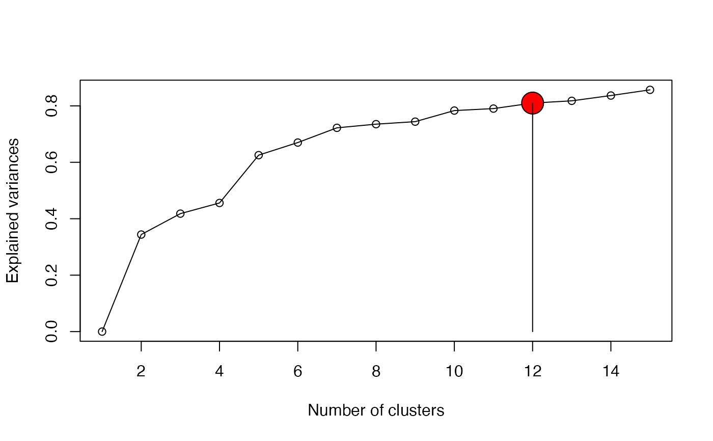

This function divides the hierarchical dendrogram into meaningful clusters ("phyloregions"), based on the ‘elbow’ or ‘knee’ of an evaluation graph that corresponds to the point of optimal curvature.
optimal_phyloregion(x, method = "average", k = 20)
| x | a numeric matrix, data frame or “dist” object. |
|---|---|
| method | the agglomeration method to be used. This should be (an unambiguous abbreviation of) one of “ward.D”, “ward.D2”, “single”, “complete”, “average” (= UPGMA), “mcquitty” (= WPGMA), “median” (= WPGMC) or “centroid” (= UPGMC). |
| k | numeric, the upper bound of the number of clusters to compute. DEFAULT: 20 or the number of observations (if less than 20). |
a list containing the following as returned from the GMD package (Zhao et al. 2011):
k: optimal number of clusters (bioregions)
totbss: total between-cluster sum-of-square
tss: total sum of squares of the data
ev: explained variance given k
Salvador, S. & Chan, P. (2004) Determining the number of clusters/segments in hierarchical clustering/segmentation algorithms. Proceedings of the Sixteenth IEEE International Conference on Tools with Artificial Intelligence, pp. 576–584. Institute of Electrical and Electronics Engineers, Piscataway, New Jersey, USA.
Zhao, X., Valen, E., Parker, B.J. & Sandelin, A. (2011) Systematic clustering of transcription start site landscapes. PLoS ONE 6: e23409.
#> $df #> k ev totbss tss #> 1 1 0.0000000 0.00000 73.51413 #> 2 2 0.3439631 25.28615 73.51413 #> 3 3 0.4180648 30.73367 73.51413 #> 4 4 0.4558959 33.51480 73.51413 #> 5 5 0.6253545 45.97240 73.51413 #> 6 6 0.6699774 49.25281 73.51413 #> 7 7 0.7221816 53.09056 73.51413 #> 8 8 0.7351744 54.04571 73.51413 #> 9 9 0.7440770 54.70018 73.51413 #> 10 10 0.7833117 57.58448 73.51413 #> 11 11 0.7903725 58.10355 73.51413 #> 12 12 0.8099121 59.53999 73.51413 #> 13 13 0.8178569 60.12404 73.51413 #> 14 14 0.8365969 61.50169 73.51413 #> 15 15 0.8567905 62.98621 73.51413 #> 16 16 0.8734187 64.20862 73.51413 #> 17 17 0.8832666 64.93258 73.51413 #> 18 18 0.8895001 65.39083 73.51413 #> 19 19 0.8929996 65.64809 73.51413 #> 20 20 0.8964737 65.90349 73.51413 #> #> $optimal #> $k #> [1] 12 #> #> $ev #> [1] 0.8099121 #> #> $inc.thres #> [1] 0.01 #> #> $ev.thres #> [1] 0.8 #> #> attr(,"description") #> [1] "A \"good\" k=12 (EV=0.81) is detected when the EV is no less than 0.8\nand the increment of EV is no more than 0.01 for a bigger k.\n" #> attr(,"class") #> [1] "elbow" "list" #>